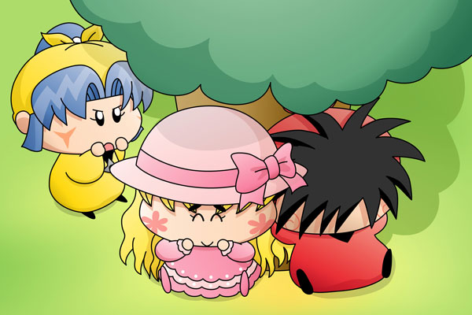

オトメ「うふふふふ…」
ヤマネ「オトメ殿！
どうしてオトメ殿がここにおられるのでしょう？」
オトメ「もちろん、あたしがヤッくんの恋人だからよ」
ヤマネ「違うでございます！
その証拠に、いつもヤシチ兄様が嫌がっているではございませぬか！」
オトメ「ヤッくんったらいつも控え目なんだから」
ヤマネ「早くヤシチ兄様から離れて欲しいでございますっ」
オトメ「もうあたしヤッくんから離れられない！」
ヤマネ「オトメ殿っ！！！」
木陰で昼寝をしているヤシチを見つけたオトメがヤシチの横へ。さらにそれを目撃したヤマネの堪忍袋の緒がついに切れる…というシチュエーションです(^^;。ヤマネはオトメのことを恋のライバルと思いこみ、積極的なオトメを見て焦りを感じていそうというのが私の見解。そしてオトメは自分がヤシチの恋人と信じているから、ヤマネのことはまったくライバル視していないのでしょうね。
ごおるでんのラストでヤシチをめぐってヤマネとオトメが初顔合わせしましたが、その後のエピソードがなかったのがちょっと残念です。さすがにヤシチとオトメがくっつくことはないのでしょうけど、でもこうして二人がくっつく絵を描いていると、何だかヤシチとオトメがいい関係に思えてきたりもするから不思議です(笑)。
(2006/11/30)